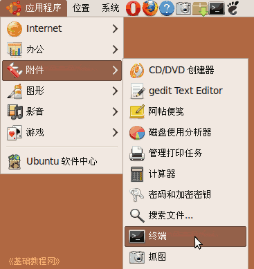

Ubuntu/GNOME 桌面程序指南
作者：TeliuTe 来源：基础教程网
六十五、终端 返回目录 下一课终端是一个命令行窗口，在这里可以输入命令；
1、终端
1）点一下左上角的圆圈按钮，稍等在旁边出来的文本框中输入字母 ter 然后点击下边出来的终端图标，
以前的是点菜单“应用程序 - 附件 - 终端”，打开窗口；

2）打开的窗口中有一行命令提示符，左边是自己的用户名和计算机名称，冒号右边是当前主文件夹，
后面的 $ 表示处于普通用户，# 是管理员用户；
3）在提示符后面输入命令后，按一下回车键就可以执行命令；
4）sudo 是切换到管理员，要输入自己的密码，输的时候不显示，盲打输入后按回车键；
5）输入 exit 可以退出当前状态，按 Ctrl + Z 可以停止当前运行的程序，Ctrl + C 中止当前程序；
本节学习了终端的基础知识，如果你成功地完成了练习，请继续学习下一课内容；
本教程由86团学校TeliuTe制作|著作权所有
基础教程网：http://teliute.org/
美丽的校园……
转载和引用本站内容，请保留版权信息和本站链接。